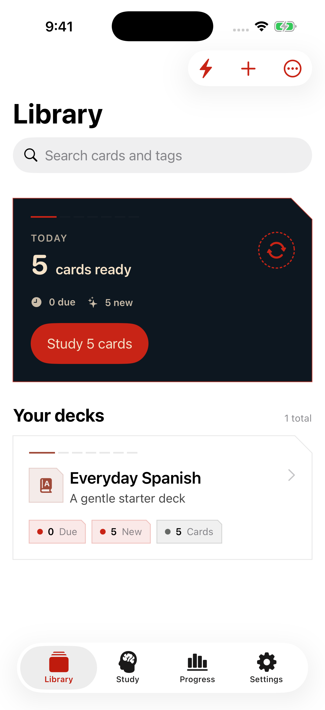
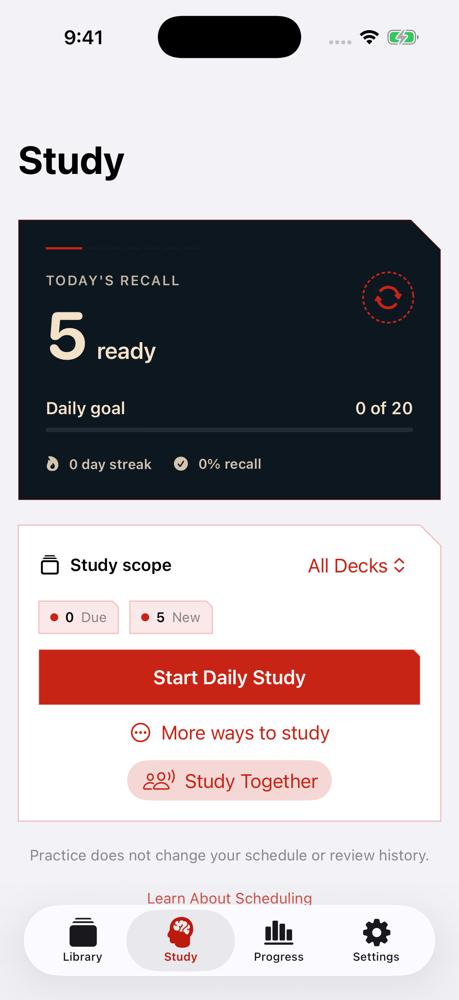
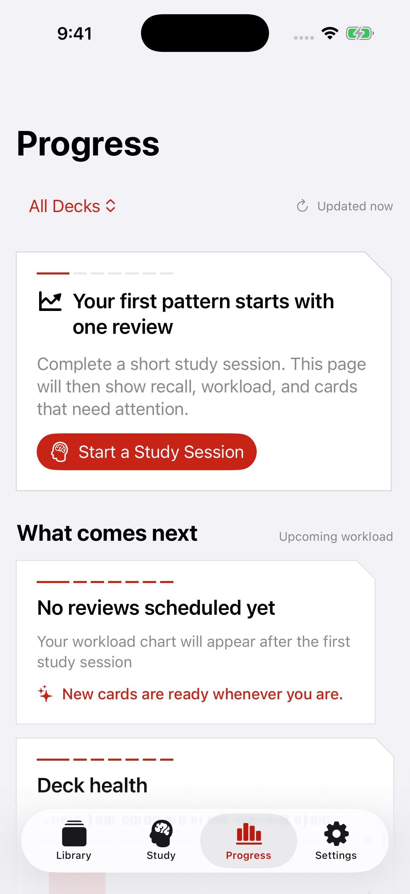
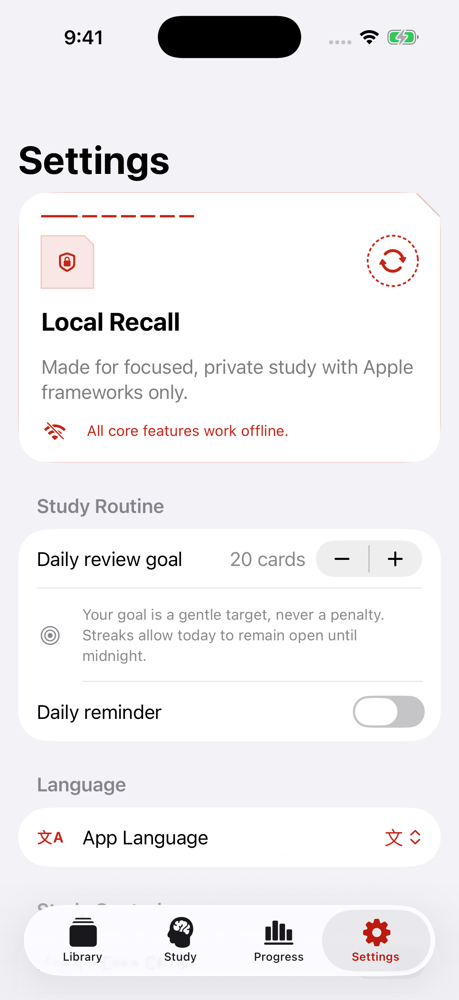

Clear repetition
See the next interval before answering. Study due cards or practice freely without changing the schedule.
Private flashcards for iPhone, iPad, and Mac
Corvus Recall pairs transparent spaced repetition with on-device capture, practical imports, and careful backups. No account, no ads, and no subscription.
Available now on Mac. iPhone and iPad are under review.



The study catalog
Use the tools that matter, understand what each answer changes, and keep control of every card. Corvus Recall is designed to remain useful without turning your study library into a service you have to manage.
See the next interval before answering. Study due cards or practice freely without changing the schedule.
Create rich cards from text, images, audio, documents, handwriting, and OCR that runs locally.
Preview CSV and Anki text imports, export clean files, and move complete decks between devices.
Validate native backups, keep recovery snapshots, restore carefully, and optionally use your private iCloud Drive.
Track recall, workload, streaks, difficult cards, and upcoming reviews without treating learning as a grade.
Use iPad layouts, widgets, keyboard controls, sharing from other apps, nearby sessions, and SharePlay.
Privacy, filed in plain language
Corvus Recall has no developer account system, analytics SDK, ad network, or tracking. Optional iCloud features use your private Apple container and stay off until you enable them.

Corvus Recall 1.0
Built with Apple frameworks for iPhone, iPad, and Mac. A single purchase, a portable library, and no recurring bill.